Organic chemistry
Structure, reaction mechanisms, compound families, synthesis and organic spectroscopy.
Structure and stereochemistry
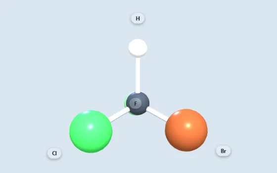
R/S stereochemistry (CIP) 3D
Cahn–Ingold–Prelog priorities, R/S assignment viewing from the side opposite the lowest-priority group, mirror-image enantiomers and a configuration challenge.

Conformations: ethane, butane and cyclohexane 3D
Newman projections with torsional energy, anti/gauche/eclipsed conformations, cyclohexane chair with ring flip, A values and 1,3-diaxial repulsion.
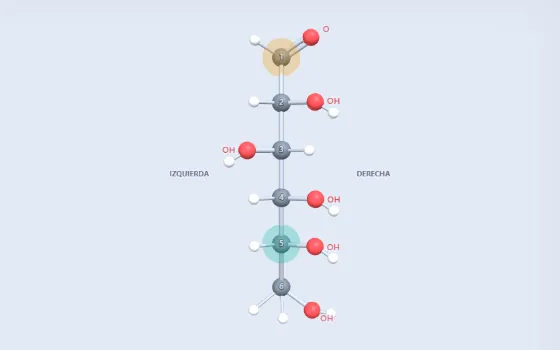
Carbohydrates: Fischer → Haworth → chair
From the Fischer projection to the Haworth projection: pyranoses and furanoses of aldoses and ketoses, anomeric carbon (α/β), chair or envelope conformation and 1,3-diaxial repulsions, with a guided lesson and challenge.

Functional groups 3D
Twenty molecules with fifteen highlighted functional groups, characteristic IR bands, nomenclature priority and an identification challenge.

IUPAC Organic Nomenclature
3D simulator for learning and practicing IUPAC organic nomenclature: main chain, numbering and locants, substituents in alphabetical order and functional-group priority, with 3D molecules and a practice mode.

Aromaticity and Hückel's rule
3D aromaticity simulator: Hückel's 4n + 2 rule, π molecular orbitals and the Frost circle, antiaromaticity, aromatic ions and heterocycles (pyrrole, pyridine, furan).
Mechanisms and reactivity

SN1 · SN2 · E1 · E2 mechanisms
3D geometries, electron-pushing arrows, orbitals, energy profiles and a mechanism predictor by substrate, nucleophile/base and solvent.

Electrophilic addition and SEAr 3D
Addition of HBr, HCl, H₂O and Br₂ to alkenes (Markovnikov, carbocation, bromonium ion) and electrophilic aromatic substitution with σ complex and substituent effects (o/m/p).

Nucleophilic addition to the carbonyl 3D
Aldehydes and ketones with different nucleophiles: Bürgi–Dunitz angle, tetrahedral intermediate, hemiacetal/acetal and nucleophilic acyl substitution.
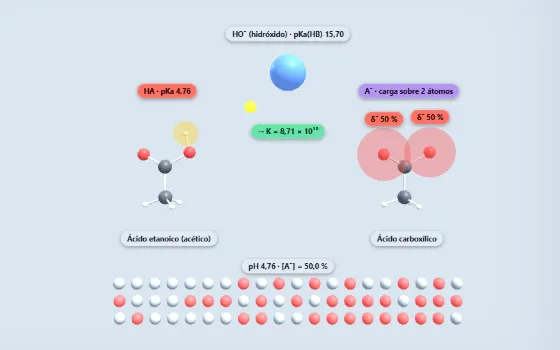
Organic Acidity and pKa
3D simulator of organic acidity: pKa, conjugate base stability, hybridization, electronegativity, resonance and inductive effect, with acid–base equilibrium and ionization as a function of pH.
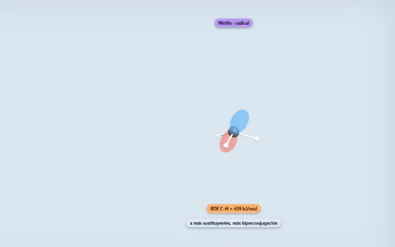
Radicals and chain halogenation
3D simulator of radical halogenation of alkanes: radical stability, initiation, propagation and termination, chlorination versus bromination selectivity (Hammond postulate) and product distribution for propane.

Enolates and Aldol Condensation
3D simulator of enolates and the aldol reaction: α-hydrogen acidity, enolate resonance, aldol addition, E1cB dehydration and Claisen–Schmidt crossed condensation, with electron arrows.

Carboxylic Acids and Derivatives
3D simulator of carboxylic acid derivatives: reactivity (chloride, anhydride, ester, amide), resonance, nucleophilic acyl substitution by addition–elimination, hydrolysis and interconversion.
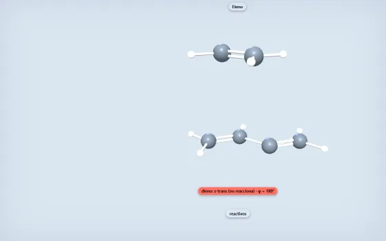
Diels–Alder reaction
3D simulator of the Diels–Alder [4+2] reaction: s-cis conformation of the diene, concerted mechanism, frontier orbitals, substituent effect, endo rule and thermodynamics (ΔG versus T).

Electrocyclic and Sigmatropic Reactions
Pericyclic reactions beyond Diels–Alder: 4-, 6- and 8-electron electrocyclizations (conrotatory and disrotatory), frontier orbitals, thermal and photochemical control, [1,5] H shifts and the [3,3] Cope rearrangement with Woodward–Hoffmann rules.

Oxidation and reduction in organic chemistry
3D simulator of organic oxidation and reduction: carbon oxidation states, oxidation of primary, secondary and tertiary alcohols with PCC and Jones, reduction of carbonyls with NaBH₄ and LiAlH₄, hydride mechanism and reagent selectivity.
Compound families

Alcohols, Ethers and Amines
3D simulator of alcohols, ethers and amines: polarity, hydrogen bonds (dimers), boiling points, water solubility as a function of chain length, amine basicity (pKaH) and comparative reactivity.

Alkynes: structure and reactions
Linear sp geometry, acidity of the terminal alkyne and acetylides, selective hydrogenation (Lindlar cis, Na/NH₃ trans, H₂/Pd alkane), hydration to ketones or aldehydes and HBr addition with regiochemistry, with substrate and product in 3D.

Aromatic Heterocycles
Pyrrole, furan, thiophene, pyridine, imidazole and pyrimidine in 3D: lone pair in the π system or in the plane, basicity (pKa of the conjugate acid), reactivity and regioselectivity toward electrophiles and presence in biomolecules.

Lipids, saponification and soaps
Triglycerides with saturated and unsaturated fatty acids (melting point), saponification with NaOH and calculation of the saponification value, micelles that emulsify grease and the effect of hard water on soap.

Polymers: addition and condensation
Chains of polyethylene, polypropylene, polystyrene, PVC, nylon 6,6 and PET in 3D: addition polymerization (initiation, propagation, termination) and condensation polymerization, degree of polymerization, Carothers equation, average molar mass and dispersity.
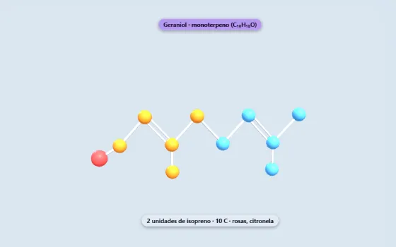
Terpenes and Steroids
The isoprene rule in 3D: linear monoterpenes, sesquiterpenes and diterpenes with their C₅ units, squalene cyclization and the steroid skeleton (rings A–D, numbering) with cholesterol, testosterone, estradiol and progesterone.
Synthesis

Grignard and organometallic reagents
3D simulator of Grignard reagents: RMgX formation, polarity inversion of carbon, addition to aldehydes, ketones, CO₂ and esters, incompatibility with acidic protons and comparison with organolithiums and cuprates.
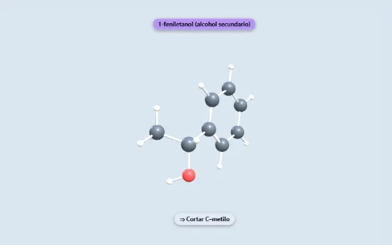
Retrosynthesis and Multistep Synthesis
Retrosynthetic analysis in 3D: disconnection of C–C bonds, synthons and synthetic equivalents (Grignard), functional group interconversion and overall yield in linear and convergent syntheses.
Spectroscopy
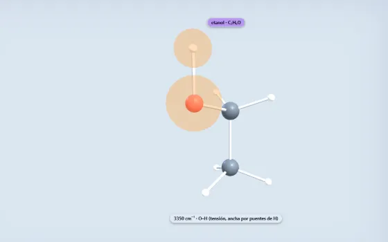
IR and ¹H NMR spectroscopy 3D
Animated bond vibrations and IR bands, chemical shift, integration and multiplicity (n+1 rule) with spectra assigned to atoms of the molecule.
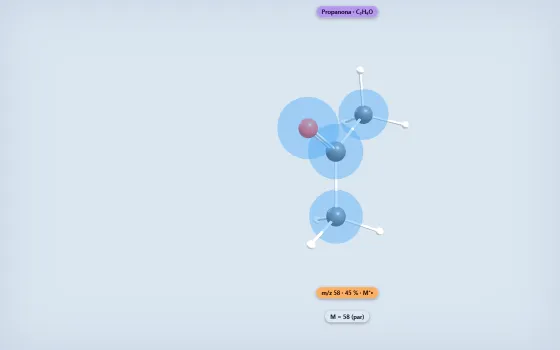
Mass spectrometry and ¹³C NMR
3D simulator of mass spectrometry (molecular ion, Cl and Br isotope pattern, α-cleavage, McLafferty) and ¹³C NMR (non-equivalent carbons, chemical shift) to solve organic structures.
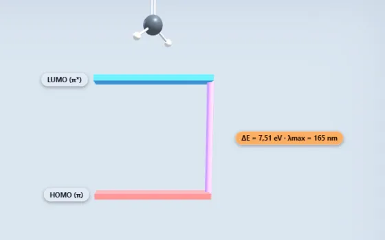
UV-Vis spectroscopy and conjugation
π → π* transition in polyenes: effect of conjugation on the HOMO–LUMO gap and the maximum wavelength, alkyl substituents, complementary color of the solution, absorption spectrum and the Beer–Lambert law, from ethene to β-carotene.
General chemistry
Atomic structure, bonding, states of matter, reactions, equilibrium, thermodynamics and electrochemistry. Each simulation is independent.
Atomic structure and bonding
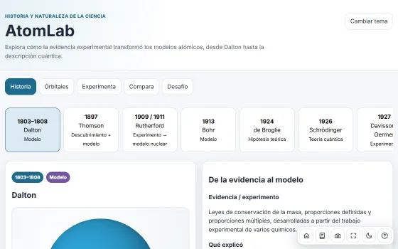
AtomLab: atomic models
3D atomic models from Dalton to Schrödinger, s, p and d orbitals with nodes and phase, and the experiments of Millikan, Davisson–Germer and the hydrogen spectrum.

Electron Configuration
Orbitals, full and condensed notation, orbital diagrams and ions.
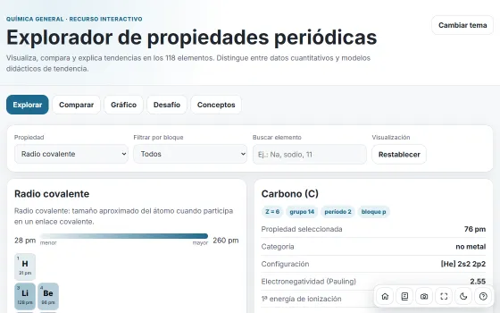
Periodic Properties
Seven properties with reference data (Pauling, ionization, affinity, radii) and an interactive plot to compare trends.
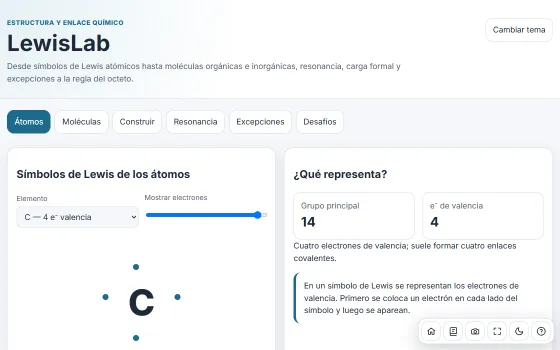
LewisLab: Lewis structures
Live formal charges, bond polarity, resonance, octet exceptions and a direct link to GeoMol.

GeoMol: molecular geometry
3D VSEPR, angles, polarity and vector net dipole, with practice mode and export.

Sigma and pi bonds
Hybridization and single, double and triple bonds in 3D; benzene with delocalized π.

Chemical bonding 3D
Ionic (NaCl, LiF, KBr, MgO), covalent (nonpolar and polar) and metallic (electron sea) bonding: transfer, overlap, crystal lattice, energy curves and a ΔEN predictor.

Molecular Orbitals in Diatomics
3D simulator of molecular orbital theory (LCAO) in homonuclear diatomic molecules of period 1 and 2: energy diagrams, bond order, paramagnetism and shape of the σ, σ*, π and π* orbitals.

Electromagnetic radiation 3D
3D E–B wave, linear and circular polarization, Poynting vector, photon as a wave packet and the full spectrum from radio to γ rays with E = hf and effects on matter.
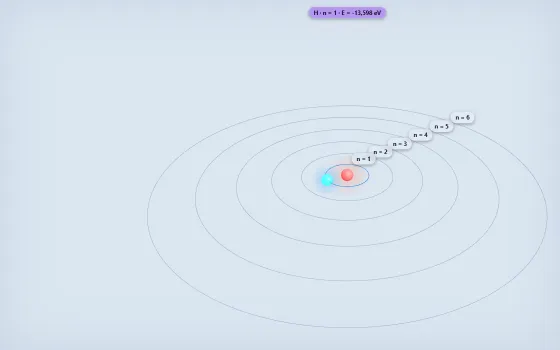
Electronic transitions and the Bohr atom 3D
Levels of H, He⁺ and Li²⁺, photon absorption and emission, Lyman, Balmer and Paschen series, de Broglie waves, ionization and line spectrum.
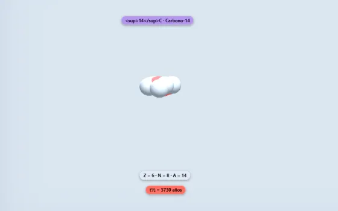
Radioactivity and Nuclear Chemistry
3D simulator of radioactivity: nucleus and notation, N/Z stability band, alpha, beta and electron-capture decay, half-life, activity and carbon-14 dating.
States of matter and forces

Ideal and real gases 3D
Container with particles: laws of Boyle, Charles, Gay-Lussac and Avogadro, gas mixtures (Dalton), Maxwell–Boltzmann distribution and van der Waals deviations.

Phase diagrams 3D
P–T diagrams of water and CO₂: phases, equilibrium curves, triple and critical points, supercritical fluid, heating curve and Clausius–Clapeyron.
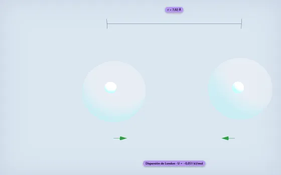
Intermolecular interactions 3D
38 pairs of species: London, ion–ion, ion–dipole, dipole–dipole, quadrupole, H bond and halogen bond, with U(r) curve, thermal average and energy comparator.
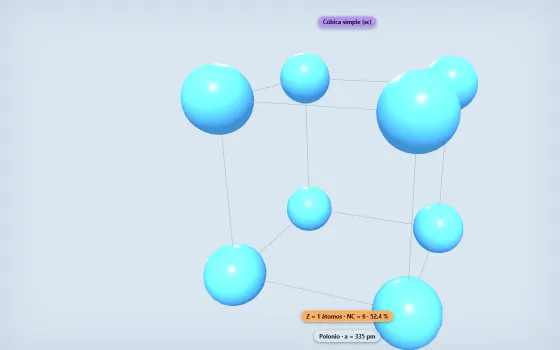
Crystalline solids and unit cells
3D simulator of crystalline solids: simple, body-centered and face-centered cubic cells, close packing hcp and ccp, ionic structures (NaCl, CsCl, ZnS, CaF₂), atoms per cell, coordination number, packing fraction and density.

Semiconductors and Band Theory
Band theory in 3D: metals, insulators and semiconductors according to the width of the band gap, thermal population of electrons, n- and p-type doping, p–n junction and LED color from the gap energy.
Reactions and stoichiometry
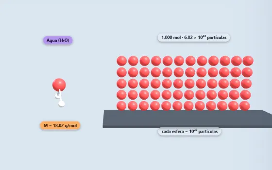
The mole and molar mass
Molar mass from the periodic table, Avogadro's number, conversions among grams, moles and particles, molar volume of gases at STP and percent composition, with molecules and piles of particles in 3D.
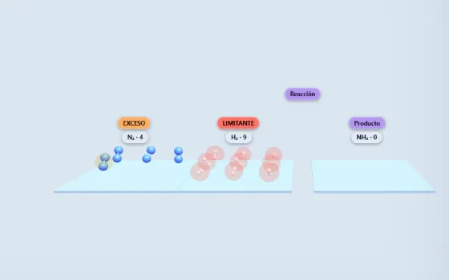
Stoichiometry and limiting reactant 3D
Balanced reactions in batches of molecules: limiting and excess reactant, theoretical product, leftover, conservation of mass, a gram calculator with % yield and a challenge.
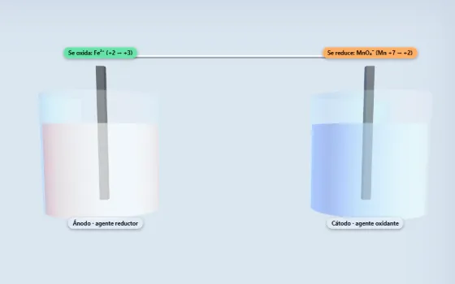
Redox balancing: the ion-electron method
Balance redox reactions in acidic and basic media step by step: oxidation numbers, half-reactions, balancing of O, H and charge with electrons, and the final sum, with the electron flow in 3D.

Inorganic Nomenclature
Formulas and names of ionic compounds in 3D: charge balance, Stock, systematic and traditional nomenclature, halogen oxoanions, acids and oxoacids, with ion assembly.

Environmental chemistry and green chemistry
Ozone layer and CFCs, greenhouse effect (radiative forcing of CO₂), acid rain and green chemistry in 3D: atom economy, E-factor and twelve principles with comparison of synthetic routes.
Solutions and equilibrium
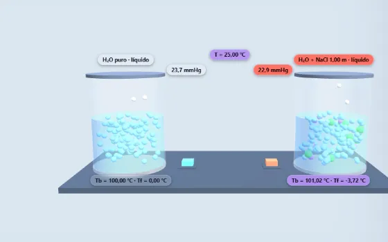
Solutions and colligative properties 3D
Raoult's law, vapor-pressure lowering, boiling-point elevation, freezing-point depression and osmotic pressure with van 't Hoff factor, in beakers and a semipermeable membrane.
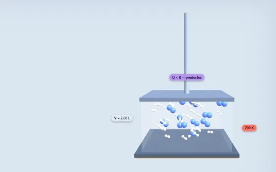
Chemical equilibrium and Le Châtelier 3D
Container with piston and molecules: quotient Q versus K, disturbances by concentration, volume, temperature (van 't Hoff), catalyst and inert gas, with ICE table, graphs and a challenge.

Acid–base, pH and titration 3D
Burette and beaker with indicator: strong, weak and polyprotic (H₃PO₄) acids and bases, titration curve, buffer region (Henderson–Hasselbalch), species distribution, equivalence point and indicator choice.
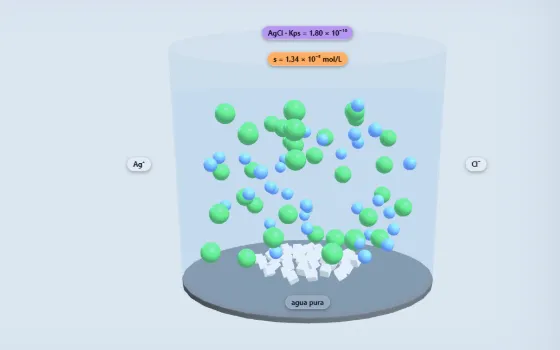
Solubility and solubility product (Ksp)
3D simulator of the solubility of sparingly soluble salts: Ksp, molar solubility, common-ion effect, pH effect, quotient Q versus Ksp and selective precipitation (AgI/AgCl).
Thermodynamics and kinetics

Thermochemistry and calorimetry 3D
Calorimeter, specific heat, enthalpy of reaction, Hess's law and enthalpies of formation with energy-level diagrams.
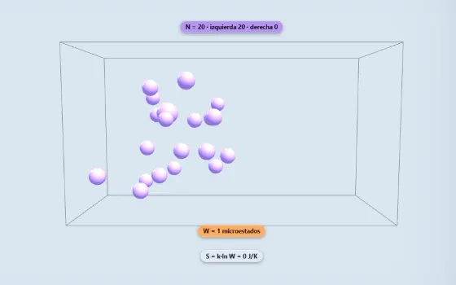
Entropy and Gibbs Free Energy
3D simulator of entropy and Gibbs free energy: microstates and S = k·ln W, spontaneous expansion, entropy of the states of matter, ΔG = ΔH − TΔS, equilibrium temperature and relation to K.
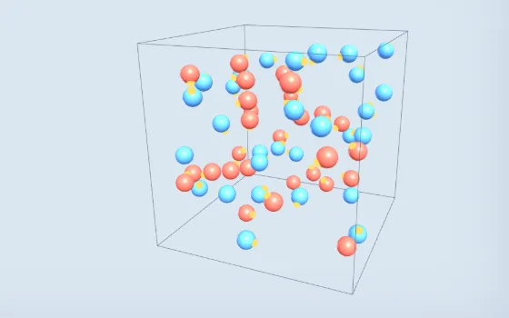
Collisions and transition state 3D
Collision theory (energy, orientation, temperature, catalyst) and transition state with reaction coordinate diagram, Hammond postulate and Arrhenius plot.
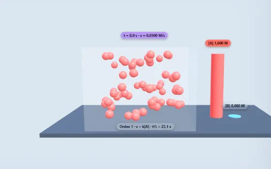
Kinetics: reaction orders 3D
Integrated rate laws of order 0, 1 and 2, half-life, linearization ([A], ln[A], 1/[A]) and a mystery experiment to determine the order from initial rates.
Electrochemistry
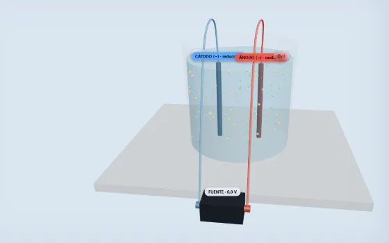
Water electrolysis 3D
Electrolytic cell with voltage and electrolyte control, half-reactions at cathode and anode, and a molecular view of the process.
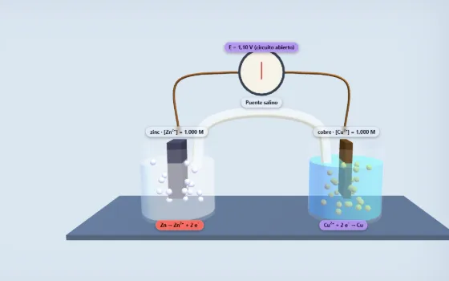
Galvanic cells and the Nernst equation 3D
Cells with salt bridge and voltmeter: standard potentials, E°cell, Nernst equation, Q versus K, ΔG° = −nFE° and mass transferred as the cell discharges.

Corrosion and protection of iron
Corrosion of iron as a galvanic cell in a water drop: anodic and cathodic zones, effect of salt, oxygen and pH, Zn, Sn and Cu coatings, Mg sacrificial anode and a comparison of commercial cells.
Inorganic chemistry
Coordination compounds, organometallic and bioinorganic chemistry, symmetry and reactivity.
Fundamentals
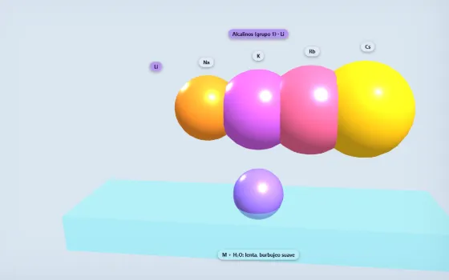
Descriptive Chemistry of the Groups
Trends and reactivity of alkali metals, alkaline earth metals, halogens and noble gases, and the acid–base character of period 3 oxides in 3D: radius, ionization energy, reaction with water and states of matter.
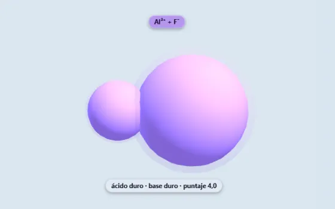
Hard and soft acids and bases (HSAB)
Classification of cations and bases as hard, borderline or soft according to charge, radius and polarizability; qualitative pair-stability score, prediction of the direction of exchange reactions and mineral examples (Al₂O₃, HgS, Cu₂S).

Molecular symmetry and point groups
Symmetry elements and operations (E, Cn, σ, i, Sn) applied in 3D to H₂O, NH₃, CH₄, BF₃, SF₆, CO₂, HCl, trans-dichloroethene, benzene and a chiral molecule; point-group assignment with a decision diagram and relation to polarity and chirality.
Coordination compounds
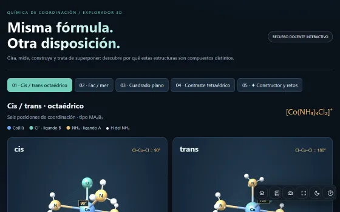
Isomerism · 3D Lab
Same formula, different structure: cis/trans and fac/mer isomers in 3D models, and Werner's argument for deducing geometry by counting isomers.
Δ / Λ chirality in complexes
Origin of chirality in coordination complexes and distinction between the Δ and Λ configurations in 3D models.
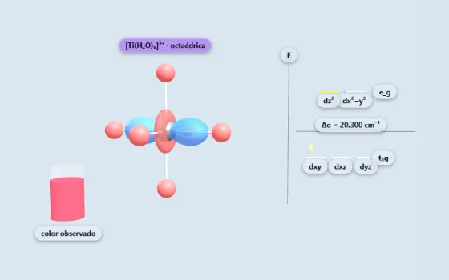
Crystal field theory 3D
d splitting in octahedral, tetrahedral and square-planar fields, spectrochemical series, high/low spin, CFSE and complex color from Δ.
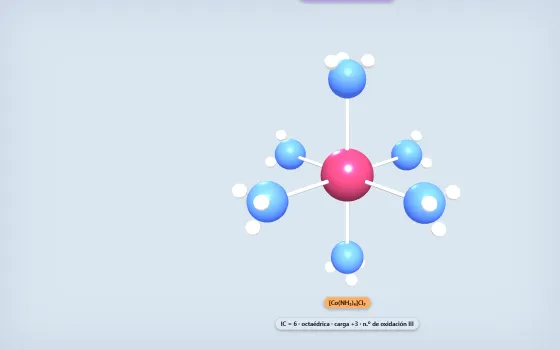
Nomenclature and formulas of complexes
3D simulator to name and write formulas of coordination compounds: central atom, monodentate ligands and chelates, coordination number, geometry, charge and oxidation number, alphabetical order, prefixes, anionic complexes (-ate) and salts.
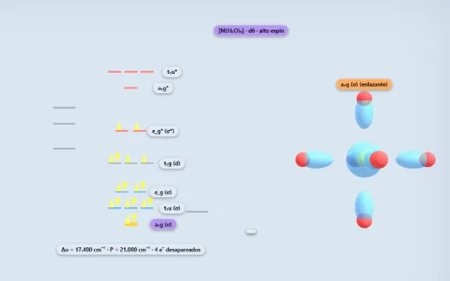
Molecular orbitals in octahedral complexes
3D simulator of molecular orbital theory in octahedral ML6 complexes: σ bonding, a1g, t1u, eg and t2g orbitals, Δo splitting, π effect (donor and acceptor), spectrochemical series, high and low spin, magnetism and color.
Organometallic and bioinorganic chemistry
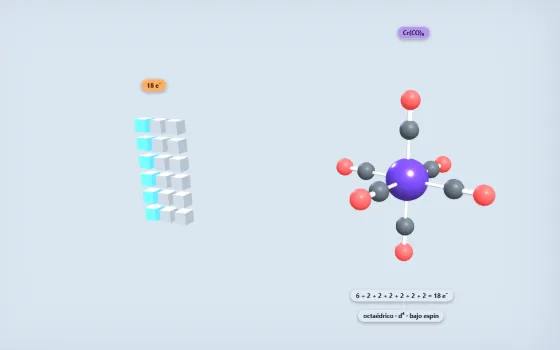
Organometallics: the 18-electron rule
3D simulator of organometallic chemistry: the 18-electron rule, electron counting by the neutral method, metal carbonyls, ferrocene, 16-electron square planar complexes and the Wilkinson catalytic cycle (oxidative addition, coordination, migratory insertion and reductive elimination).

Bioinorganic chemistry: metals in life
Active site of the heme group with Fe²⁺, histidine, O₂ and CO; cooperativity (Hill), the Bohr effect and CO poisoning; Zn in carbonic anhydrase, Mg in chlorophyll, Cu in azurin and Fe in cytochrome c; toxicity of Pb²⁺, Hg and Cd and chelation.
Biology
Cell and molecular biology: biomolecules, the cell, metabolism, genetics and signaling.
Biomolecules
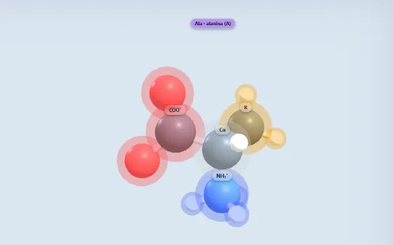
Amino acids and protein structure 3D
Amino acids with charge by pH and pI, peptide bond, Ramachandran map by steric hindrance, α-helix and β-sheet with hydrogen bonds.
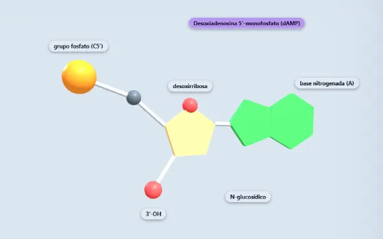
DNA: structure, replication and transcription 3D
B-DNA double helix with base pairs, replication fork, transcription and translation with codon table.
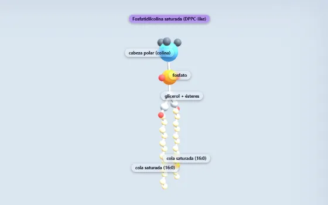
Lipids and the cell membrane 3D
Phospholipids, fluid bilayer, effect of temperature and cholesterol, passive and active transport with channels, GLUT and the Na⁺/K⁺ pump.

Nucleotides and Coenzymes
ATP, NAD⁺/NADH, FAD/FADH₂ and coenzyme A in 3D: modular structure (base, ribose, phosphates), precursor vitamins, ATP hydrolysis, hydride transfer and coupled energy.
The cell

Animal cell 3D
Nucleus, reticula, Golgi, mitochondria, lysosomes, centrosome and cytoskeleton in a 3D model with cutaway, labels, functions by system and a challenge.
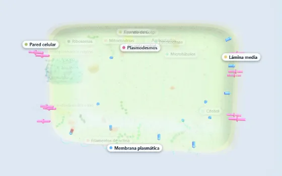
Plant cell 3D
Cell wall, central vacuole, chloroplasts, plasmodesmata and the remaining organelles, with animated photosynthesis and comparison with the animal cell.
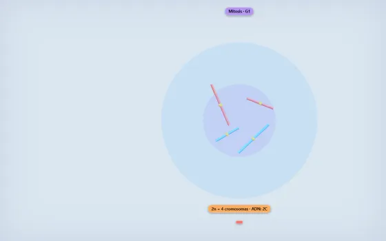
Mitosis and Meiosis
3D simulator of cell division: cell cycle and interphase, phases of mitosis, meiosis I and II, synapsis and crossing over, independent assortment of homologous chromosomes, DNA content per cell and comparison of both processes.
Enzymes and metabolism
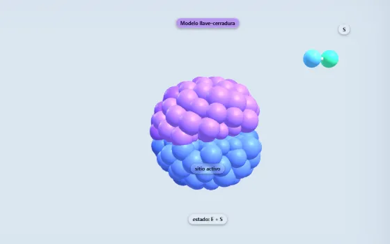
Enzymes and enzyme kinetics 3D
Lock-and-key and induced fit, catalytic cycle, Michaelis–Menten with an enzyme population, competitive and noncompetitive inhibition, Lineweaver–Burk, pH and temperature.

Energy metabolism 3D
Glycolysis, Krebs cycle, respiratory chain and ATP synthase, aerobic balance versus fermentation, and inhibitors (rotenone, cyanide, oligomycin, DNP).
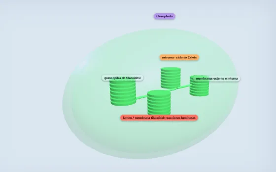
Photosynthesis: light reactions and the Calvin cycle
3D simulator of photosynthesis: chloroplast structure, light absorption, water photolysis, electron transport chain, H⁺ gradient and ATP synthase, NADPH production and the Calvin cycle with CO₂ fixation, reduction and regeneration.

Lipid and Amino Acid Metabolism
β-oxidation of fatty acids in 3D (four reactions per cycle, FADH₂, NADH and acetyl-CoA), ATP balance by chain length, carnitine transport, transamination with PLP, the urea cycle and the fate of the carbon skeleton.
Genetics and gene expression

Mendelian genetics and Hardy–Weinberg
Monohybrid and dihybrid Punnett squares with phenotypic ratios, χ² test against a simulated sample of offspring, and Hardy–Weinberg equilibrium with selection against the recessive and genetic drift.

The lac operon and gene regulation
Regulation of the E. coli lac operon: LacI repressor, operator, promoter and lacZYA genes, effect of lactose (allolactose) and glucose (cAMP–CAP), β-galactosidase expression level and lacI⁻ and lacOᶜ mutants in 3D.
Physiology and signaling
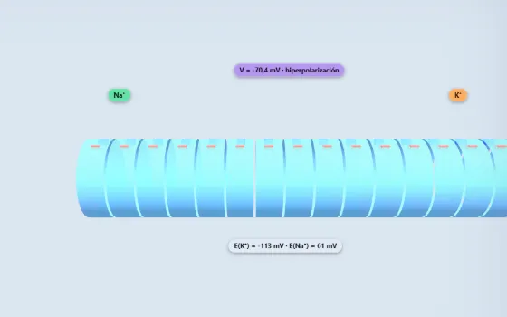
Membrane potential and action potential
Nernst and Goldman equations for K⁺ and Na⁺, resting potential, Hodgkin–Huxley-type model with adjustable stimulus, threshold, refractory period and blockers (TTX, TEA), with a 3D axon where channels open and the impulse propagates.
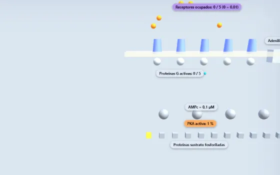
Cell signaling: receptor → second messenger
Cascade of a G protein-coupled receptor: ligand, receptor occupancy, G protein, adenylyl cyclase, cAMP, PKA and phosphodiesterase, with amplification, dose–response curves (Hill, EC50), partial agonists, antagonists, cholera toxin and comparison with a receptor tyrosine kinase.
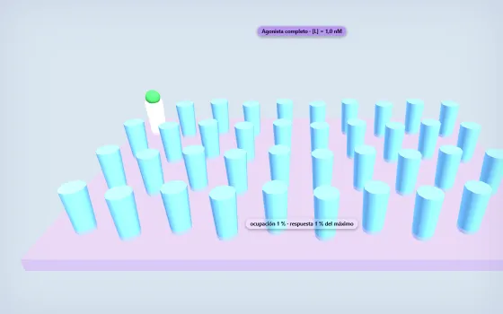
Drugs and Receptors
Drug–receptor interaction in 3D: occupancy according to Kd, agonists, partial agonists and antagonists, dose–response curves (EC₅₀), competitive antagonism with curve shift and Lipinski's rules for oral absorption.
Ecology, microorganisms and health

Populations and ecosystems
3D ecology simulator: levels of organisation, exponential and logistic growth, carrying capacity, the predator–prey cycle (culpeo fox and degu), competition with an invasive species and the effects of habitat loss and hunting.
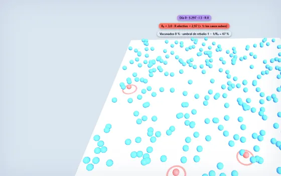
Epidemics, the immune system and vaccines
3D epidemic simulator: person-to-person transmission with the SIR model, the reproduction number R₀ and effective R, prevention measures, immune defences, vaccines and herd immunity.

Microorganisms and biotechnology
3D microorganism simulator: structure and size of bacteria, yeasts and viruses, the bacterial growth curve, a virus’s lytic cycle, fungi, antibiotic resistance and biotechnology: fermentation, yoghurt and copper biomining in Chile.
Laboratory techniques
Experimental techniques for separation, preparation, analysis and molecular biology, with the setup, theory and calculations involved.
Separation and purification
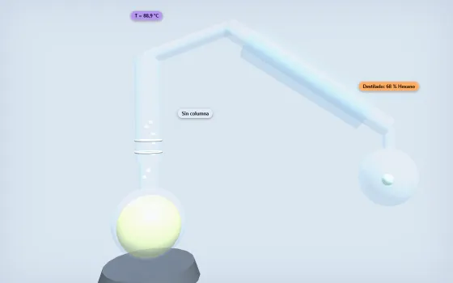
Simple and Fractional Distillation
3D setup for simple and fractional distillation of ideal binary mixtures (Raoult's law): temperature–composition diagram, theoretical plates, distillate composition and distillation curve.
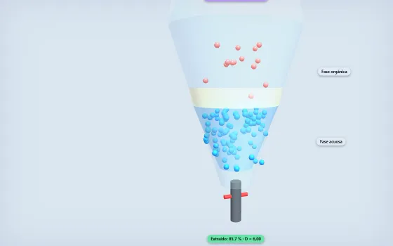
Liquid–liquid extraction
3D separatory funnel: partition coefficient, phases by density, multiple extractions with small portions and acid–base extraction according to pH and pKa.

Recrystallization
Purification of solids by recrystallization: solubility versus temperature curves, minimum volume of hot solvent, cooling rate, crystal formation and yield.

Thin-layer and column chromatography
TLC plate and silica column in 3D: polarity of compounds and eluent, retention factor Rf, resolution between spots and column elution chromatogram.

Melting Point and Purity
Capillary and melting-point apparatus in 3D: melting range, depression by impurities (eutectic), heating rate and mixed melting point to identify compounds.
Preparation and synthesis
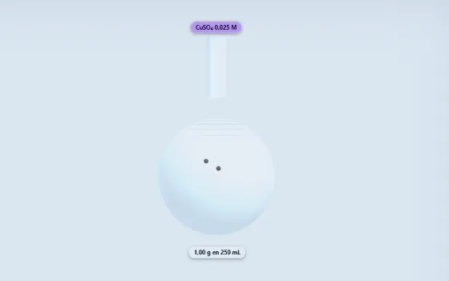
Solutions and dilutions
Molar, percent and molal concentration with a 3D volumetric flask, preparing solutions from a solid, dilution with C₁V₁ = C₂V₂ and mixing of solutions, with visible solute particles.
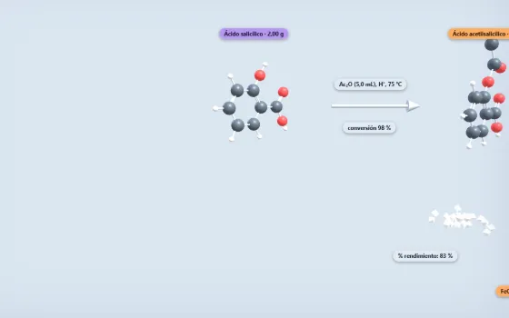
Synthesis of aspirin
Acetylation of salicylic acid with acetic anhydride: step-by-step mechanism, limiting and excess reagent, theoretical and percent yield, effect of temperature, time and catalyst, and a purity test with FeCl₃.
Quantitative analysis
Acid–base, pH and titration 3D
Burette and beaker with indicator: strong, weak and polyprotic (H₃PO₄) acids and bases, titration curve, buffer region (Henderson–Hasselbalch), species distribution, equivalence point and indicator choice.

Gravimetric analysis
Gravimetric determination of chloride, sulfate, iron and nickel: precipitation with excess reagent, digestion, filtration and ignition to constant mass, gravimetric factor and the effect of coprecipitation and residual moisture.
Spectrophotometry and the Beer–Lambert law
3D UV-Vis spectrophotometer: transmittance and absorbance, Beer–Lambert law, spectrum and λmax, calibration curve with linear regression and determination of an unknown sample.

Significant Figures and Uncertainty
Precision versus accuracy with a 3D target, random and systematic error, laboratory instruments with their uncertainty, significant figures in sums and products and propagation of uncertainties.
Qualitative analysis and molecular biology
Flame test and quantum transitions
Relates the flame color of each element to the electronic transitions between energy levels.

PCR and gel electrophoresis
Thermocycler with denaturation, primer annealing and extension, 2ⁿ exponential amplification, effect of annealing temperature (Tm) and reading of bands on an agarose gel with a molecular-weight ladder.
Earth sciences
Plate tectonics, earthquakes and volcanoes, rocks and fossils, and the climate system.

Plate tectonics and earthquakes
3D plate tectonics simulator: convergent (Nazca subduction beneath Chile), divergent and transform boundaries, mantle convection, P and S seismic waves, seismogram, distance to the epicentre and magnitude.

Volcanoes and eruptions
3D volcano simulator: magma chamber and vent, effusive and explosive eruptions depending on the magma’s silica and gas content, ash, lahars, technical alerts and Chile’s volcanoes, and benefits such as geothermal energy.

Rocks, strata and fossils
3D geology simulator: igneous, sedimentary and metamorphic rocks, the rock cycle, formation of strata, fossilisation, the principle of superposition, intrusions, index fossils, uplift and erosion.

Climate and climate change
3D simulator of the climate system: Earth’s energy balance, albedo, the natural greenhouse effect, ice and water-vapour feedbacks, rising CO₂ with real data and future scenarios.
Physics
Motion, forces and energy; electricity, waves and light; astronomy and cosmology.

Solar System 3D
The Sun, the eight planets, Pluto, moons and belts with fact sheets for each body, scale sizes, Kepler's laws, weight calculator and a challenge.
Kinematics: uniform and accelerated motion
3D kinematics simulator: position, displacement, uniform and uniformly accelerated linear motion, x–t and v–t graphs, braking distance and two objects meeting.
Forces and Newton’s laws
3D simulator of forces: weight and gravity on different bodies, elastic force and Hooke’s law, static and kinetic friction, and Newton’s three laws with a free-body diagram.

Mechanical energy, work and power
3D energy simulator: work done by a force, gravitational potential and kinetic energy on a track, conservation of mechanical energy, dissipation by friction and the power of a crane.

Momentum and collisions
3D momentum simulator: impulse and average force (airbag), elastic, inelastic and partially elastic collisions, different masses and recoil on an air track.
Electrostatics: charging and electric force
3D electrostatics simulator: electric charge, charging by friction with the triboelectric series, by contact and by induction on an electroscope, grounding and Coulomb’s law.
Series and parallel electric circuits
3D circuit simulator: open and closed circuits, Ohm’s law, series and parallel connection of bulbs, equivalent resistance, a burnt-out bulb and electric power.
Waves and sound
3D sound wave simulator: air particles forming compressions and rarefactions, amplitude and intensity, frequency and pitch, speed in different media, echoes and how the ear works, with an audible tone.
Lenses and the human eye
3D optics simulator: rays through a converging lens, real inverted images, the magnifying glass, the thin-lens equation, the eye and accommodation, myopia and hyperopia with their corrective lenses.
The expanding universe
3D simulator of the expanding universe: galaxy redshift, Hubble’s law, expansion without a centre, the age of the universe, its history since the Big Bang and astronomy at Chile’s observatories.
No simulations match your search.